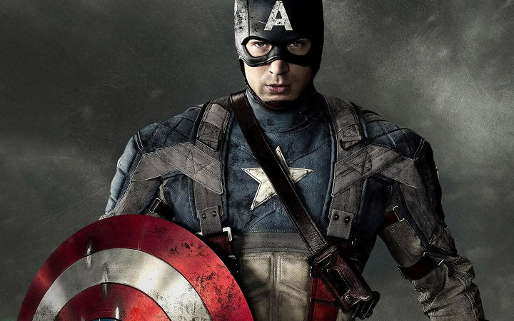

<!DOCTYPE html>
<html lang="en" dir="ltr">
  <head>
    <meta charset="utf-8">
    <title></title>
    <style media="screen">
      body{
          background-color: black;
          color: white; }
      div{
        text-align:center;
        align: center;
        }
      H1 {
          color: ;
          width:230px;
          border: solid 3px red;
          font-size: 50px;
        }
        table, tr, th, td {
            border: solid 1px white;
            border-collapse: collapse;
            padding: 8px;
            font-color: white;
        }
    </style>

  </head>
  <body>
    <div id:all><center>
    <h1><span style ="color:red">MARVEL</span></h1>
</center>

    

    <h2><span style ="color:#2524FF"><a href='./index.html'>CAPTIN AMERICA</a></span></h2>
<br>
<p>캡틴 아메리카의 캡틴은 초창기 코믹스에서는 말 그대로 미국의 대장이라는 뉘앙스로 쓰였으나, <br>
  시간이 흘러 역사적, 군사적인 요소가 캐릭터에게 추가되면서 미합중국 육군 장교 계급으로서의 '대위'의 의미를 함께 띄는 모습으로 변했다. <br>
  그를 지칭할 때 흔히 쓰이는 「캡틴」(혹은 줄여서 '캡')은 그의 계급을 의미하는 뜻이기도 한 것이다. 또한 캡틴이라는 말에는 어벤저스의 넘버 원이라는 의미도 포함한다.
  <br> 캡틴 아메리카는 어벤저스의 가장 전통적인 지휘관이다. 이후 어벤저스가 이리저리 분화하면서 리더가 바뀌기도 하지만 <br>
  어디까지나 일부 분파일 뿐이며 보통 어벤저스의 대장이라고 한다면 당연히 캡틴 아메리카를 말한다. 또한 그가 이끌던 부대 '하울링 코만도스'의 지휘관이라는 뜻이 될 수도 있다.</p>
   <br>
   <p>캡틴 아메리카 시리즈</p>
    <center>
      <table>
    <tr>
      <th><span style ="color:white">2011.07.28.</span></th> <th><span style ="color:white">퍼스트 어벤져</span></th>
    </tr>
    <tr>
      <td><span style ="color:white"> 2014.03.26 </span></td> <td><span style ="color:white">캡틴 아메리카:윈터솔져</span></td>
    </tr>
    <tr>
      <td><span style ="color:white"> 2014.03.26 </span></td> <td><span style ="color:white">캡틴 아메리카: 시빌 워</span></td>
    </tr>

</table>

<video width='500' height='500' autoplay controls loop>
<source src= './captin.mp4' type='video/mp4'>
<source src= './captin.webm' type='video/webm'>
<source src= './captin.ogg' type='video/ogg'>
</video>
</center>
    </div>
  </body>
</html>
